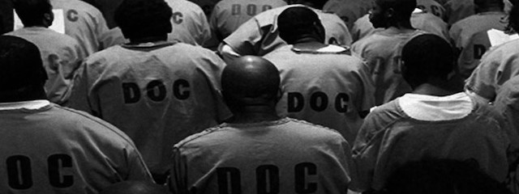

2018-01-12 08:00

We haven’t read Michelle Alexander’s powerful book yet, but it was recently in the news for being censored in New Jersey prisons. The INTERCEPT noted the irony: “Michelle Alexander’s book chronicles how people of color are not just locked in, but locked out of civic life, and New Jersey has exiled them even further by banning this text specifically for them,” said ACLU-NJ Executive Director Amol Sinha in a statement. “The ratios and percentages of mass incarceration play out in terms of human lives. Keeping a book that examines a national tragedy out of the hands of the people mired within it adds insult to injury.”
RELATED to this, there is a conference on racist mass-incarceration on January 20th in Braintree.
A panel of five people will present views and discuss issues we face regarding mass incarceration as, in the words of Michelle Alexander, a racial caste system that requires a great social movement to effectively deal with it. Her argument is that today’s criminal justice system functions as a framework of social oppression and political suppression, comparable to those of Jim Crow and Slavery, and requires serious consideration.
FEATURING: Elizabeth Herbin-Triant of UMass Lowell, and Jon Huibregtse of Framingham State University to talk about what our society faced under Jim Crow and relate that to what we face today. Franklin Baxley, Director of the Criminal Justice Policy Coalition, Rahsaan Hall, Director of the ACLU Racial Justice Program, and Susan Tordella, from End Mass Incarceration Today, will talk about the issues we face and initiatives under way to build democracy and oppose racial injustice.
Please click here to register for the conference.
Anyone want to carpool?